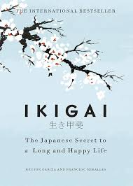

ikigai.

Ikigai: A Gentle Guide to a Long and Fulfilling Life
"Ikigai: The Japanese Secret to a Long and Happy Life" by Francesc Miralles and Hector Garcia blends Eastern philosophy with practical tips to help readers discover their purpose and live a meaningful life.
Drawing inspiration from the longevity and vibrant communities of Okinawa, Japan, the book explores the concept of "ikigai" - a reason for being.
Strengths: Unveiling the Power of Ikigai
The book's strength lies in its introduction of the "ikigai" concept.
By combining what you love (passion), what you're good at (mission), what the world needs (vocation), and what you can be paid for (profession), the book offers a framework for finding a fulfilling path.
This approach encourages a holistic view of purpose, encompassing personal satisfaction, societal contribution, and financial sustainability.
Simple Wisdom for Everyday Life
"Ikigai" is not a singular, grand purpose, but rather the culmination of small, mindful choices.
The book emphasizes the importance of living in the present moment ("flow"), fostering strong social connections ("moai"), and maintaining a positive outlook ("wabi-sabi").
These practices, rooted in Japanese traditions, are presented in a clear and accessible way, making them applicable to readers of all backgrounds.
Aesthetics and Practical Exercises
The book's visual appeal is a plus.
Beautiful illustrations and calligraphy enhance the reading experience.
It also incorporates practical exercises, like "ikigai" diagrams and daily reflection prompts, encouraging readers to actively engage with the concepts.
Weaknesses: Limited Depth and Cultural Specificity
While the book offers a good introduction, it can feel somewhat superficial at times.
The complexity of finding purpose and navigating careers isn't fully explored.
Additionally, the cultural context of "ikigai" is not always deeply examined.
Some readers might find the focus on Japanese practices less relatable to their own lives.
A Gentle Nudge, Not a Definitive Guide
"Ikigai" is not a self-help book promising a quick fix.
Instead, it's a gentle nudge towards living a more meaningful and fulfilling life.
The focus is on small, sustainable changes that can accumulate over time.
Overall: A Refreshing Perspective on Purpose
"Ikigai" offers a refreshing perspective on finding purpose.
By combining philosophical concepts with practical advice, it encourages readers to reflect on their values, strengths, and contributions to the world.
While not a definitive guide, the book provides valuable tools for anyone seeking a more mindful and fulfilling life.